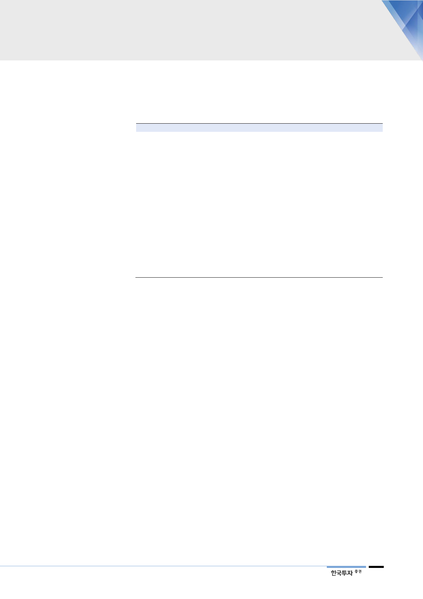

늘어졌던 원전정비도
이제는 막바지
2019년 원전이용률
80%대 회복할 전망
이제 발전믹스는
다시 좋아지는 구간
Containment Liner Plate)과 콘크리트에 결함이 발견됐기 때문이다. 사회적으로
안전에 특히 민감한 만큼 철저한 안전점검과 설비보강으로 정비일정의 지연이 불
가피했다. 이 과정에서 고리 3호 등 5기 원전의 정비기간은 1년을 넘어갔다.
<표 11> 원전별 정비 지연일수 및 사유
원전
고리#3
고리#4
신고리#1
신고리#2
신고리#3
한빛#3
한빛#4
한빛#5
한빛#6
월성#1
월성#2
월성#3
월성#4
신월성#2
한울#2
한울#5
한울#6
용량
950
950
1,000
1,000
1,400
1,000
1,000
1,000
1,000
679
700
700
700
1,000
950
1,000
1,000
착수일
2017년 1월
2017년 4월
2017년 1월
2018년 2월
2018년 1월
2018년 5월
2017년 5월
2017년 2월
2017년 7월
2017년 5월
2018년 3월
2017년 3월
2018년 6월
2018년 1월
2017년 9월
2017년 11월
2018년 3월
2017년 4월
최종종료일
2018년 5월
2018년 4월
2018년 3월
2018년 5월
2018년 6월
진행중
진행중
2017년 5월
2018년 1월
2018년 8월
2018년 5월
2017년 8월
진행중
2018년 3월
2018년 3월
2018년 5월
2018년 5월
2017년 6월
자료: 산업통상자원부, 한국수력원자력, 한국투자증권
지연일
428
242
363
1
60
13
381
14
140
379
2
128
9
4
116
78
6
13
정비 내용 및 지연 사유
격납건물 철판 점검 및 정비
격납건물 철판 점검 및 정비
원자로냉각재펌프 정비 및 설계개선
원자로냉각재펌프 정비
가압기안전방출밸브 점검 및 정비
격납건물 철판 점검 및 정비
격납건물 철판 및 콘크리트 공극 점검 등
격납건물 철판 점검
격납건물 철판 및 콘크리트 공극 점검 등
수소감시기 설치, 콘크리트 외벽 철근노출 보수
격납건물 콘크리트 외벽 철근노출 보수
증기발생기 내부 이물질 점검 및 보수
중수 누출 사건 원인분석 등 대응조치
압력조절기 불꽃발생 사건 원인분석 등 대응
주증기대기방출밸브 충격시험 오류 부품 정비
격납건물 철판 점검 및 정비
격납건물 철판 점검
격납건물 철판 점검
다만 원전에 대한 전수조사 일정이 점차 마무리되면서 정비일수는 1분기 피크를
지났다. 지난 3월 신고리 1호기와 신월성 2호기를 시작으로 정비를 마친 원전들
이 하나둘 가동을 재개하고 있다. 지난 3월 신고리 1호와 5월 고리 3호 원전은
400일이 넘었던 정비를 마쳤다. 이에 따라 원전 이용률은 1분기 바닥을 지나 2
년 만에 회복되고 있다. 3분기말 기준으로 가동이 중단된 원전은 8기로 줄었다.
이 중 4기는 4분기 정비를 마칠 예정이다.
강도 높은 안전점검을 거친 만큼 다음 정비 사이클부터는 소요시간이 예상의 범
주에서 크게 벗어나지 않을 것이다. 그 결과 원전 가동률은 4분기 79%, 2019년
82%로 상승할 전망이다. 물론 안전에 대한 사회적 눈높이가 높아져 과거처럼
90%대를 기대하기는 어렵다. 다만 원전 가동이 하나 둘 정상화됨에 따라 단기적
으로 비용부담이 줄어드는 한편 탈원전에 대한 과도한 우려 역시 완화될 것이다.
신고리 4호기 등 완공을 앞둔 신규 원전의 허가에 대한 논의에도 힘이 실릴 전망
이다.
안전성 이슈만 일단락되어 이용률이 정상화되면 발전믹스 개선 효과가 본격화될
것이다. 기저발전 비중은 올해 상반기 64%에서 하반기 71%로 높아질 전망이다.
2012년 이후 한전의 전력판매량은 매년 2% 내외 늘어나는데 그치고 있다. 전력
수요의 증가율이 둔화된 것에 비해 기저발전기의 용량은 2017년말 59GW로 5
년 사이 31% 커졌다. 2023년까지는 17% 증가할 전망이다.
27